PvP - Hero Wars Alliance")
S+ Tier List Hero Wars 2026 JvJ
- JvJ: "Jogador versus Jogador"
Os heróis de nível S+ são considerados os personagens de melhor desempenho no jogo. Eles têm excelente sinergia com a maioria das composições de equipe, oferecem vantagens significativas nas batalhas e frequentemente possuem habilidades únicas que podem mudar o rumo de uma luta. No entanto, eles podem ter algumas desvantagens menores que vale a pena notar.
Os heróis estão listados em ordem alfabética para cada ranque
Aidan

Tier List: S+
Prós:
- Alta produção de dano.
- Excelentes habilidades de sacrifício com cura e escudo.
- Forte sinergia com outros heróis de alto dano.
Contras:
- Defesa relativamente baixa.
- Vulnerável a danos explosivos.
Byrna
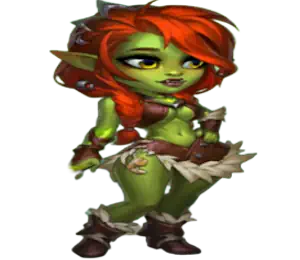
Tier List: S+
Prós:
- Acúmulo Permanente de HP Máximo.
- Excelente Remoção de Controle de Grupo (CC Cleansing).
- Alto Escalamento de Ataque Mágico (MA) (aumenta toda a cura/dano).
Contras:
- Vulnerável a Dano Explosivo no Início (Early Burst Damage).
- Enf enfraquecida por Efeitos Anti-curandeiro (Anti-healer).
- Posição na Linha do Meio requer Vida Alta (High Health).
Cornelius
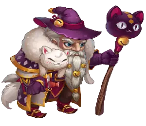
Tier List: S+
A Tier List de Hero Wars Alliance está em constante evolução. Com Somna contra-atacando Kayla, muitas equipes baseadas em magia estão dominando tanto o PvP ofensivo quanto o defensivo. Como resultado, Cornelius se tornou cada vez mais valioso, especialmente contra Folio, atualmente o mago mais forte do jogo.
Prós:
- Pode causar dano significativo a heróis de alta inteligência.
- Fornece bom suporte e utilidade.
- Forte contra equipes com muito dano mágico.
Contras:
- Produção geral de dano limitada contra escudo.
- Requer boa sinergia de equipe para maximizar a eficácia.
Drayne

Tier List: S+
Prós:
- Anti-Ressurreição: Impede a ressurreição de inimigos derrotados, sendo um ótimo counter para equipes como a da Kayla.
- Buff Esmagador: Aumenta o dano dos aliados atrás dele contra inimigos com pouca vida.
- Alto Dano em Área (AoE): Tornado Ascendente causa grande dano em área e aumenta o ataque.
Contras:
- Dependente de Posição: O buff só afeta aliados posicionados atrás dele.
- Gestão de Energia: Requer uso cuidadoso da energia para ativar as habilidades.
Electra
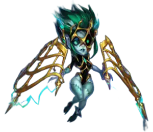
Tier List: S+
Prós:
- Dano explosivo extremamente alto em alvo único.
- Escala sua Vida com base na Armadura, Defesa Mágica e Esquiva.
- Pode contra-atacar atacantes críticos como Kayla ou Yasmine.
- Tem boa sinergia com curandeiros e tanques que prolongam as batalhas.
Contras:
- Precisa de tempo para aumentar suas defesas e alcançar Vida máxima.
- Fraca contra equipes com muito controle que impedem a ativação das habilidades.
Folio
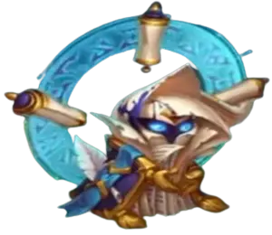
Tier List: S+
Prós:
- Convoca uma cópia estacionária de Folio, aumentando a Energia dos aliados para usarem habilidades ultimates mais vezes.
- Causa dano mágico em área (AoE) massivo a todos os inimigos.
- Rouba Inteligência do herói inimigo com o maior atributo.
Contras:
- Baixa defesa.
- Muito caro e difícil de farmar.
- Skins insuficientes para aumentar o poder.
Guus
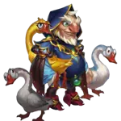
Lista de Tier: S+
Prós:
- Cura e sustenta bem a equipe
- Aumenta a chance de crítico para heróis físicos
- Penas Douradas oferecem dano e proteção
- Ótimo com equipes focadas em crítico ou sobrevivência
Contras:
- O bônus de crítico não é passivo como o do Jet
- Requer bom timing para manter os buffs ativos
- Fraco contra remoção de buffs ou bloqueio de cura
Iris
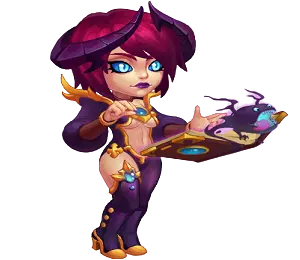
Tier List: S+
Prós:
- Habilidade Over-Power que causa dano a todos os inimigos.
- Reduz o ataque físico e mágico dos inimigos que aplicam debuffs.
- Imune a debuffs
Contras:
- Requer proteção dos aliados devido à baixa defesa.
Julius
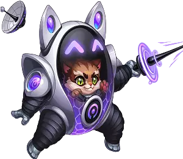
Tier List: S+
Prós:
- Alta defesa e sobrevivência com escudo.
- Pode remover debuffs dos aliados.
- Tanque com habilidade de cura.
Contras:
- Baixa armadura e defesa mágica.
Kayla

Tier List: S+
Prós:
- Kayla causa dano puro significativo, ignorando as defesas inimigas.
- Ela tem habilidades que lhe permitem se curar, aumentando sua sobrevivência nas batalhas.
- Kayla pode ressuscitar seu irmão Aidan, proporcionando uma vantagem significativa durante lutas difíceis.
Contras:
- Vulnerável a controle de multidão.
- Requer tempo preciso para dano máximo.
- Fraca contra o novo personagem Somna.
Kendle

Tier List: S+
Lara Croft

Tier List: S+
Prós:
- Forte produção de dano à distância.
- Múltiplos bônus de artefato: ataque mágico, armadura, defesa mágica, penetração de armadura, penetração mágica, chance de golpe crítico, esquiva.
Contras:
- Ela é uma heroína muito cara pelo pouco que entrega nas batalhas.
- Requer posicionamento cuidadoso e sinergia para maximizar a eficácia.
Miu

Tier List: S+
Prós
- Cegueira melhora a precisão dos aliados.
- Aumenta a chance e o dano de crítico mágico.
- Dano extra contra inimigos cegos.
- Adiciona Penetração Mágica após críticos.
Contras
- Depende da duração da Cegueira.
- Funciona melhor em equipes mágicas/de crítico.
Polaris
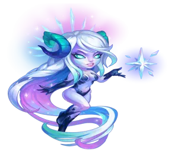
Tier List: S+
Prós:
- Controle em área extremamente forte com stun.
- Sinergia com facção do Progresso.
- Grande potencial de dano crítico mágico.
Cons:
- Alta dependência de sinergiase.
- Vulnerabilidade a anti-controle.
- Skins insuficientes para aumentar o poder.
Satori Retrabalhado
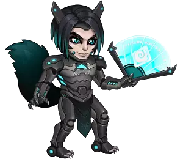
Tier List: S+
Prós:
- Alta produção de dano mágico.
- Pode marcar inimigos, aumentando o dano recebido.
- Bom contra heróis baseados em energia.
Contras:
- Vulnerável a dano físico.
- Requer muita proteção dos aliados.
Soleil
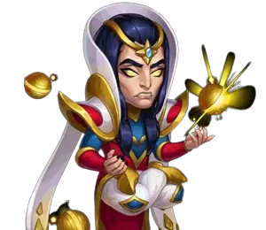
Tier List: S+
Prós:
- Pode aumentar o poder de ataque e a cura dos aliados.
- Reduz as defesas dos inimigos.
- Bom contra heróis com habilidades de controle.
Contras:
- Baixo dano e defesa.
- Skins insuficientes para aumentar o poder.
Somna
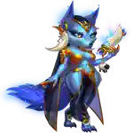
Lista de Níveis: S+
Prós:
- Excelente controle de grupo com efeitos de sono que atrapalham a retaguarda inimiga.
- Reduz o ataque físico e a penetração de armadura dos inimigos.
- Forte contra atacantes físicos com dano em área, como Kayla, Keira e Ginger.
Contras:
- Baixa durabilidade — precisa de proteção ou suporte de cura para sobreviver em lutas longas.
- Dependente de sinergia: tem desempenho muito melhor em equipes com combinação da facção do mistério.
Tempus
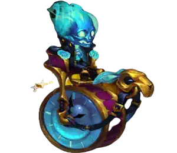
Tier List: S+
Prós:
- Alto potencial de buff de dano para Iris e Dante.
- Capaz de aumentar as penalizações que os aliados aplicam nos inimigos.
- Capaz de prolongar as penalizações que os aliados aplicam nos inimigos.
Contras:
- Vulnerável a ataques físicos.
Yasmine

Tier List: S+
Prós:
- Alta chance de acerto crítico.
- Pode evitar ataques inimigos, aumentando a sobrevivência.
- Forte contra alvos únicos.
Contras:
- Vulnerável a habilidades de controle de multidão.
Tier List JvJ Heróis de Nível S
Os heróis de nível S são personagens altamente eficazes e versáteis que se destacam em várias composições de equipe e têm um bom desempenho na maioria das batalhas. Embora possam não ser tão dominantes quanto os heróis de nível S+, eles ainda são escolhas de topo e trazem um valor significativo para qualquer equipe.
Andvari

Tier List: S
Prós:
- Andvari protege todos os aliados atrás dele de efeitos de deslocamento.
- Pode proteger aliados, proporcionando proteção adicional.
- Boa sinergia com outros heróis defensivos.
Contras:
- Produção de dano limitada.
- Requer um bom suporte de equipe para maximizar a eficácia.
Dilúvio
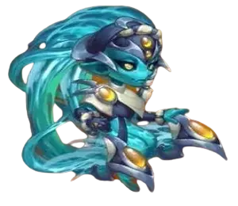
Cascade Hero Wars Alliance" title=">Cascade Hero Wars Mobile" loading="lazy">Tier List: S
Prós:
- Forte dano em área (AoE).
- Pode reduzir a armadura e a defesa mágica dos inimigos.
- Artefato de arma dupla com penetração de armadura e penetração mágica.
Contras:
- Requer suporte para maximizar a eficácia.
Cogu e Mélio
Tier List: S

Prós:
- Alta capacidade de dano explosivo.
- Pode silenciar inimigos.
- Boas habilidades de controle de multidão.
Contras:
- Vulnerável a dano contínuo.
Corvus
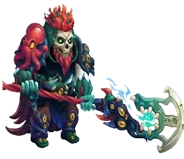
Tier List:
Prós:
- Alto dano com a habilidade Altar das Almas.
- Pode reduzir todas as defesas dos inimigos.
- Forte contra inimigos que causam dano em área (AOE).
Contras:
- Velocidade de ataque lenta.
- Vulnerável a ataques de alvo único na linha de frente.
Dante

Tier List: S
Prós:
- Alta produção de dano físico.
- Pode desviar de ataques, aumentando a sobrevivência.
- Bom para interromper a linha de frente inimiga.
Contras:
- Vulnerável a habilidades de controle de multidão.
Faceless
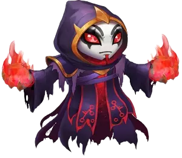
Faceless Hero Wars Alliance" title=">Faceless Hero Wars Mobile" loading="lazy">Tier List: S
Prós:
- Pode copiar habilidades inimigas, virando-as contra seu time.
- Forte dano mágico.
- Versátil em várias composições de equipe.
Contras:
- Requer tempo e posicionamento cuidadosos.
- Vulnerável a dano físico.
Isaac
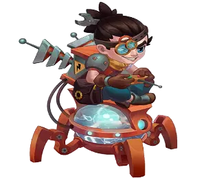
Isaac Hero Wars Alliance" title=">Isaac Hero Wars Mobile" loading="lazy">Tier List: S
Prós:
- Alta produção de dano físico.
- Pode desativar habilidades e defesas inimigas, reduzindo sua eficácia.
- Boa sobrevivência.
Contras:
- Requer bom suporte de equipe, especialmente da facção de progresso.
Jorgen
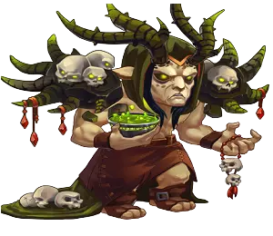
Tier List: S
Prós:
- Pode roubar energia dos inimigos, atrasando suas habilidades finais.
- Fornece bom suporte e buffs aos aliados.
- Forte contra equipes que dependem de habilidades baseadas em energia.
Contras:
- Produção de dano limitada.
Krista Retrabalhada
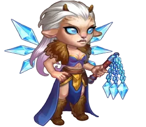
Tier List: S
Prós:
- Forte dano mágico com capacidades de área.
- Pode congelar inimigos, reduzindo sua eficácia.
- Boa sinergia com outros heróis mágicos, especialmente Lars.
Contras:
- Baixa defesa.
- Requer proteção dos aliados.
Octavia

Tier List: S
Prós:
- Forte produção de dano mágico com seu espelho.
- Pode buffar aliados com esquiva extra e penetração de armadura.
Contras:
- Baixa defesa.
Oya
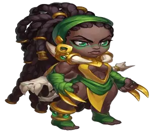
Tier List: S
Prós:
- Alta mobilidade e velocidade de ataque.
- Cura aliados que destroem escudos ou fazem acertos críticos.
- Forte em batalhas de equipe contra times com escudo.
Contras:
- Vulnerável a danos explosivos.
Peech
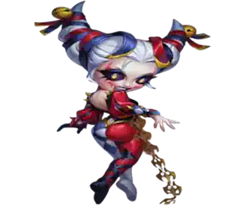
Tier List: S
Prós:
- Versátil: Se encaixa bem em equipes focadas tanto em dano mágico quanto físico.
- Fortes Buffs: Aumenta o dano dos aliados e reduz a armadura dos inimigos, tornando-a uma ótima heroína de suporte.
- Habilidades de Controle: Seu empurrão e habilidade de imobilizar inimigos (O Ato Final) oferecem excelente controle de grupo.
Contras:
- Dependente da Composição de Equipe: Suas habilidades passivas dependem fortemente de aliados do Caos ou de configurações específicas de equipe para maximizar seu potencial.
- Vulnerável a Efeitos de Controle: Seu ultimate (O Ato Final) pode ser interrompido por atordoamentos, congelamentos ou outros efeitos de controle.
- Não é uma Carregadora Solo: Ela funciona melhor como parte de uma equipe e pode ter dificuldades para carregar batalhas sozinha.
Rufus

Prós:
Tier List: S
- Alta capacidade de tanque com forte defesa mágica.
- Pode se curar, aumentando a sobrevivência.
- Forte contra dano mágico.
Contras:
- Produção de dano limitada.
- Vulnerável a dano físico.
Lian
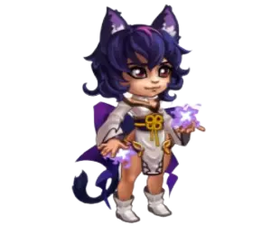
Tier List: S
Prós:
- Lian mais Xe'sha são fortes contra Kayla.
- Forte dano mágico e controle de multidão.
- Pode encantar inimigos, fazendo-os dormir.
Contras:
- Baixa defesa e vida.
- Requer proteção dos aliados.
Nebula
Tier List: S
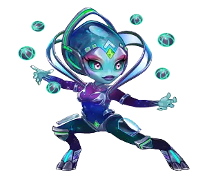
Prós:
- Pode aumentar o poder de ataque dos aliados.
- Fornece algum suporte de cura.
- Boa sinergia com heróis de alto dano.
Contras:
- Baixo dano pessoal e defesa.
- Requer proteção dos aliados.
Tristan
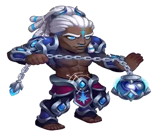
Tier List: S
Prós:
- Alta produção de dano físico.
- Pode aumentar o poder de ataque dos aliados com sua habilidade e artefato de penetração de armadura.
- Eficaz contra alvos com alta penetração mágica.
Contras:
- Vulnerável a ataques mágicos.
Xe'Sha
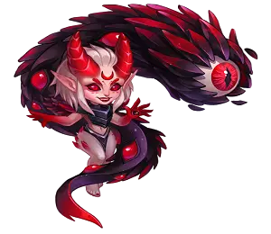
Tier List: S
Prós:
- Lian e Xe'sha são fortes contra Kayla.
- Forte dano mágico e ataques Over Power.
Contras:
- Baixa defesa e saúde.
- Requer proteção dos aliados.
Heróis de Nível A+
Os heróis de nível A+ são personagens fortes e versáteis que desempenham excepcionalmente bem na maioria das situações. Eles podem não ser tão universalmente poderosos quanto os heróis de nível S+ ou S, mas oferecem habilidades e sinergias únicas que os tornam valiosos em muitas composições de equipe.
Alvanor
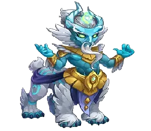
Tier List: A+
Prós:
- Forte dano mágico e controle de multidão.
- Pode proteger aliados com escudos, proporcionando proteção adicional.
- Boa sinergia com outros heróis mágicos.
Contras:
- Requer suporte de aliados da natureza para se tornar mais poderoso.
- Vulnerável a alto dano físico.
Arachne

Tier List: A+
Prós:
- Fortes habilidades de controle de grupo.
- Consegue causar um bom dano mágico.
- Boa em desorganizar as formações inimigas.
- Possui 80% de vampirismo, permitindo que recupere vida ao causar dano.
- Agora está mais forte com as habilidades de Relíquia — especialmente eficaz em equipes Polares, onde seu potencial de atordoamento é amplificado.
Contras:
- Baixa defesa e vida.
- Requer proteção dos aliados.
Astaroth

Tier List: A+
Prós:
- Tanque forte com alta defesa.
- Pode proteger aliados, fornecendo proteção adicional.
- Eficaz na absorção de dano físico.
Contras:
- Produção de dano limitada.
- Dependente do suporte da equipe para máxima eficácia.
Amira

Tier List: A+
Prós:
- Ataques mágicos poderosos (Over-Power).
- Pode enfraquecer os inimigos, reduzindo sua eficácia.
Contras:
- Requer posicionamento cuidadoso para maximizar a eficácia.
- Altos tempos de recarga nas habilidades principais.
Artemis

Tier List: A+
Prós:
- Alto dano crítico em área (AOE).
- Forte chance de acerto crítico.
Contras:
- Requer proteção dos aliados devido à baixa defesa.
Astrid e Lucas

Tier List: A+
Prós:
- Alta produção de dano físico.
- Pode invocar Lucas para dano adicional e tancar.
- Forte sinergia com outros causadores de dano físico.
Contras:
- Vulnerável a dano mágico.
Aurora
Lista de Tier: A+

Vantagens:
- Forte dano mágico e controle de grupo.
- Pode proteger aliados com esquiva.
- Boa sinergia com outros heróis mágicos e heróis com esquiva.
Desvantagens:
- Vulnerável a dano puro.
Fafnir

Tier List: A+
Prós:
- Aumenta o potencial de dano de ataque físico dos aliados.
- Pode desativar habilidades inimigas com atordoamento.
- Forte tanto na ofensiva quanto na defensiva, fornecendo escudo para aliados.
Contras:
- Requer tempo preciso para dano máximo.
- Vulnerável a controle de multidão.
Fobos

Tier List: A+
Prós:
- Forte dano mágico e controle de multidão.
- Pode drenar energia dos inimigos.
Contras:
- Baixa defesa e saúde.
- Requer proteção dos aliados.
Ginger

Tier List: A+
Prós:
- Alta produção de dano à distância.
- Sinergia com aliados do progresso, aumentando seu ataque físico.
Contras:
- Baixa defesa e vida.
Helios

Tier List: A+
Prós:
- Forte produção de dano mágico.
- Pode retaliar contra golpes críticos físico e mágicos.
- Boa sinergia com outros heróis mágicos.
Contras:
- Vulnerável a dano mágico.
Juiz
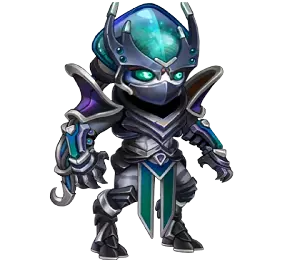
Judge Hero Wars Alliance" title=">Judge Hero Wars Mobile" loading="lazy">Tier List: A+
Prós:
- Fortes habilidades de controle de multidão.
- Pode buffar as defesas dos aliados.
- Bom contra alvos únicos e grupos.
Contras:
- Produção de dano limitada.
- Dependente do suporte da equipe para máxima eficácia.
Kai Retrabalhado

Tier List: A+
Prós:
- Forte dano mágico com habilidades em área (AoE).
- Pode controlar a posição dos inimigos, atrapalhando suas formações.
- Bom para atacar múltiplos inimigos.
Contras:
- Baixa defesa e pouca vida.
- Requer proteção dos aliados.
Leonel

Tier List: A+
Prós:
- Boa sinergia com Yasmine e Oya.
- Pode aumentar o poder de ataque dos aliados.
Contras:
- Depende de sinergia com aliados.
Lars
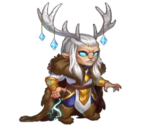
Tier List: A+
Prós:
- Forte dano mágico com capacidades de área.
- Pode controlar as posições inimigas, puxando-os juntos.
- Boa sinergia com outros heróis mágicos, especialmente Krista.
Contras:
- Baixa defesa e saúde.
- Requer proteção dos aliados.
Morrigan
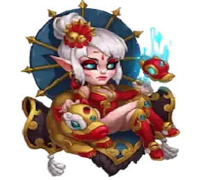
Tier List: A+
Prós:
- Pode invocar minions mortos-vivos, adicionando atacantes extras à equipe.
- Excelente curadora com fortes habilidades de suporte.
- Boa sinergia com outros heróis mortos-vivos.
Contras:
- Baixa produção de dano pessoal.
- Vulnerável a dano explosivo e controle de multidão.
Luther

Tier List: A+
Prós:
- Alta capacidade de tancar com forte defesa.
- Pode saltar para a linha de trás, interrompendo formações inimigas.
- Bom controle de multidão.
Contras:
- Vulnerável a Dilúvio e Sem Rosto.
- Requer controle preciso para maximizar a eficácia.
Machadinha
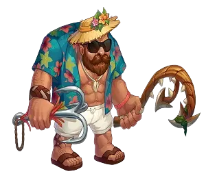
Cleaver Hero Wars Alliance" title=">Cleaver Hero Wars Mobile" loading="lazy">Tier List: A+
Prós:
- Alta capacidade de tancar com forte defesa.
- Pode puxar inimigos para perto, interrompendo sua formação.
- Bom controle de multidão.
Contras:
- Produção de dano limitada.
- Movimento e velocidade de ataque lentos.
Tartarugas Ninja
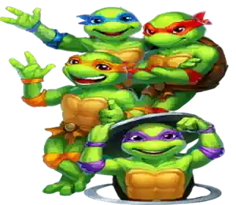
Tier List: A+
Prós:
- Podem Remover Efeitos de Controle.
- Podem se curar.
- Boa Sinergia com Heróis de alto dano físico.
Contras:
- Pouca defesa mágica.
- Não recebem os buff de passiva concedidos no início da batalha como o vampirismo de Dorian.
Sebastian
Tier List: A+

Prós:
- Protege aliados de atordoamento e maldição.
- Aumenta a chance de acerto crítico da equipe.
- Fornece forte suporte a aliados com acerto crítico.
Contras:
- Baixo dano pessoal e defesa.
- Requer boa sinergia de equipe para maximizar a eficácia.
Tier List de Heróis de Nível A Hero Wars
Os Heróis de Nível A são personagens confiáveis e eficazes que desempenham bem em várias composições de equipe. Embora possam não ser tão dominantes quanto os heróis de nível superior, eles oferecem um desempenho sólido e podem ser valiosos nas configurações certas.
Celeste
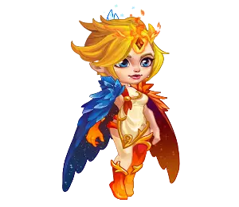
Prós:
- Curandeira e causadora de dano versátil.
- Pode alternar entre formas de luz e escuridão, proporcionando flexibilidade.
- Counter de curandeiros.
Contras:
- Requer gerenciamento cuidadoso das formas.
Dark Star
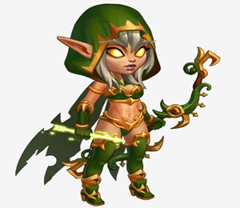
Prós:
- Pode desativar os buffs dos inimigos.
- Alto dano à distância.
- Boa em atacar a linha de frente inimiga.
Contras:
- Baixa defesa e vida.
- Requer proteção dos aliados.
Dorian

Prós:
- Forte curandeiro com habilidades de vampirismo.
- Pode aumentar o dano dos aliados.
- Boa sinergia com heróis de alto dano na retaguarda.
Contras:
- Baixo dano e defesa pessoais.
Galahad
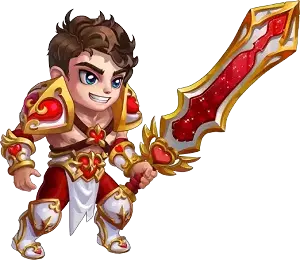
Prós:
- Guerreiro com alta capacidade de tanque e forte defesa.
- Pode se curar, aumentando a sobrevivência.
Contras:
- Produção de dano limitada.
- Vulnerável a dano mágico.
K'arkh

Prós:
- Alto dano explosivo com capacidades de AoE.
- Pode desorganizar formações inimigas.
- Forte sinergia com Sem Rosto e Kai.
Contras:
- Vulnerável ao Andvari.
- Vulnerável a controle de multidão.
Keira
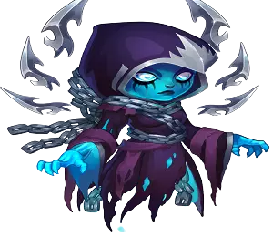
Prós:
- Alta produção de dano físico.
- Boa em atacar múltiplos inimigos.
Contras:
- Vulnerável a dano mágico.
- Requer muita proteção dos aliados.
Lilith
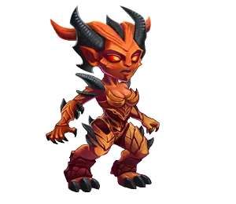
Prós:
- Alta capacidade de tanque com forte defesa.
- Pode se curar, aumentando a sobrevivência.
- Boas habilidades de controle de multidão.
Contras:
- Fraca contra ataques físicos.
Maya Retrabalhada
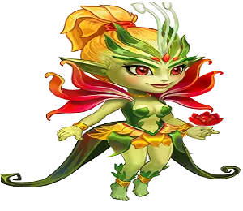
Tier List: A
Prós:
- Forte curandeira com boas habilidades de cura em área.
- Pode causar dano puro decente.
- Com suas Relíquias, ela se tornou uma excelente curandeira para tanques, além de aumentar a Robustez dos aliados.
Contras:
- Baixa defesa e saúde.
- Requer proteção dos aliados.
Qing Mao
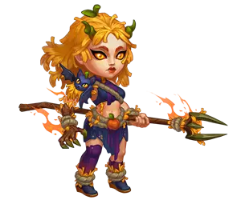
Prós:
- Alta produção de dano físico.
- Pode enfraquecer os inimigos, reduzindo suas defesas.
- Boa sinergia com outros causadores de dano físico.
Contras:
- Baixa defesa e vida.
- Requer proteção dos aliados.
Ziri

Tier List: A
Prós:
- Alta capacidade de tanque com forte defesa de armadura.
- Pode se enterrar para evitar danos e se curar.
Contras:
- Produção de dano limitada.
- Vulnerável quando não está enterrada.
- Vulnerável a dano crítico mágico.
Heróis de Nível B
Os Heróis de Nível B são personagens decentes que podem ser eficazes em situações específicas ou com as composições de equipe certas. Embora possam não ser tão versáteis ou poderosos quanto os heróis de nível superior, eles ainda podem contribuir significativamente para as batalhas se usados corretamente.
Chabba
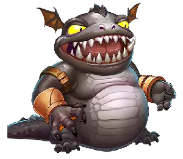
Prós:
- Alta capacidade de tanque com forte defesa.
- Pode devorar inimigos, removendo-os temporariamente da batalha.
- Bom para desviar o fogo inimigo dos aliados.
Contras:
- Produção de dano limitada.
- Vulnerável a controle de multidão e dano explosivo.
Daredevil

Prós:
- Alta produção de dano físico.
- Pode causar dano em área, atingindo múltiplos inimigos de uma vez.
Contras:
- Baixa defesa e saúde.
- Requer proteção dos aliados.
Ishmael

Prós:
- Alta chance de acerto crítico e produção de dano.
- Pode se curar, aumentando a sobrevivência.
- Bom em alvejar inimigos únicos na linha de frente.
Contras:
- Vulnerável a controle de multidão.
- Requer controle preciso para maximizar a eficácia.
Jhu

Prós:
- Alta produção de dano físico.
- Pode aumentar sua velocidade de ataque e chance de acerto crítico.
- Bom em causar dano sustentado ao longo do tempo.
Contras:
- Baixa defesa e saúde.
- Fraco contra tanque na retaguarda, especialmente Martha.
Martha
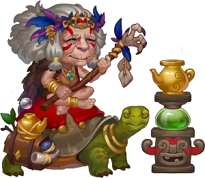
Prós:
- Habilidades excepcionais de cura com cura em área.
- Pode aumentar a velocidade de ataque dos aliados.
- Boa sobrevivência.
Contras:
- Baixa produção de dano.
- Vulnerável a dano explosivo e controle de multidão.
Mojo

Prós:
- Forte dano mágico com capacidades de área.
- Pode amaldiçoar inimigos, reduzindo sua eficácia.
- Bom em desorganizar formações inimigas.
Contras:
- Baixa defesa e saúde.
- Requer proteção dos aliados.
Orion
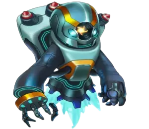
Prós:
- Alto dano explosivo com fortes ataques mágicos.
- Pode aumentar sua própria velocidade de ataque.
- Boa sinergia com outros heróis mágicos.
Contras:
- Baixa defesa e saúde.
- Requer proteção dos aliados.
Heróis de Nível C
Os Heróis de Nível C são personagens geralmente menos eficazes na maioria das situações em comparação com os heróis de nível superior. Eles podem ter usos específicos ou exigir composições de equipe muito específicas para serem eficazes, mas geralmente são superados por outros heróis.
Elmir
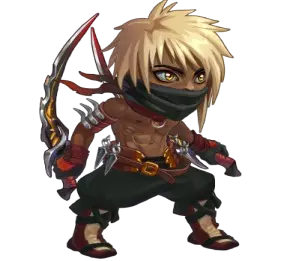
Prós:
- Alta produção de dano físico.
- Pode criar clones, adicionando atacantes extras à equipe.
- Boa mobilidade e evasão.
Contras:
- Baixa defesa e saúde.
- Clones frágeis.
Raposa

Prós:
- Forte produção de dano à distância.
- Pode atordoar inimigos, reduzindo sua eficácia.
- Bom em alvejar a linha de frente inimiga.
Contras:
- Baixa defesa e saúde.
- Requer proteção dos aliados.
Jet

Prós:
- Pode aumentar a chance de acerto crítico dos aliados.
- Fornece bom suporte e utilidade.
- Forte sinergia com heróis de alto dano.
Contras:
- Baixo dano pessoal e defesa.
- Requer proteção dos aliados.
Markus

Prós:
- Forte curandeiro com boas habilidades de cura em área.
- Pode proteger os aliados, fornecendo proteção adicional.
- Boa capacidade de sobrevivência.
Contras:
- Baixa produção de dano.
- Vulnerável a dano instantâneo e controle de multidão.
Thea
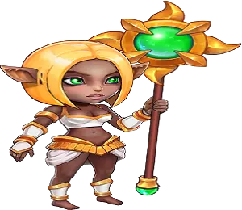
Prós:
- Habilidades de cura.
- Pode silenciar inimigos, impedindo-os de usar habilidades.
Contras:
- Baixo dano pessoal e defesa.
- Capacidades de cura baixas.
Conclusão da Tier List JvJ de Hero Wars
Obrigado por explorar a abrangente TierList JvJ de Alexandre Games para Hero Wars Alliance. Nossa análise detalhada dos heróis, desde S+ até C, tem como objetivo fornecer as informações necessárias para construir as equipes mais eficazes para batalhas na Arena, Grande Arena e Campeonato Global. Ao entender os pontos fortes e fracos de cada herói, você pode montar estrategicamente sua equipe para dominar a competição. Lembre-se, embora as listas de níveis ofereçam orientações valiosas, a sinergia entre seus heróis e seu estilo de jogo único determinarão, em última análise, seu sucesso no PVP. Feliz batalha!
Deixe Sua Opinião!
Você gostou da nossa Tier List de de batalhas JvJ para Hero Wars? Há algo que não entendeu ou gostaria de sugerir mudanças? Convidamos você a se juntar à nossa sessão de comentários na página do Alexandre Games Blog. Não hesite em expressar sua opinião, clarificar suas dúvidas e compartilhar sua sugestões.
Clique no botão abaixo para começar:
 Analise Visual Angelical
Analise Visual Angelical